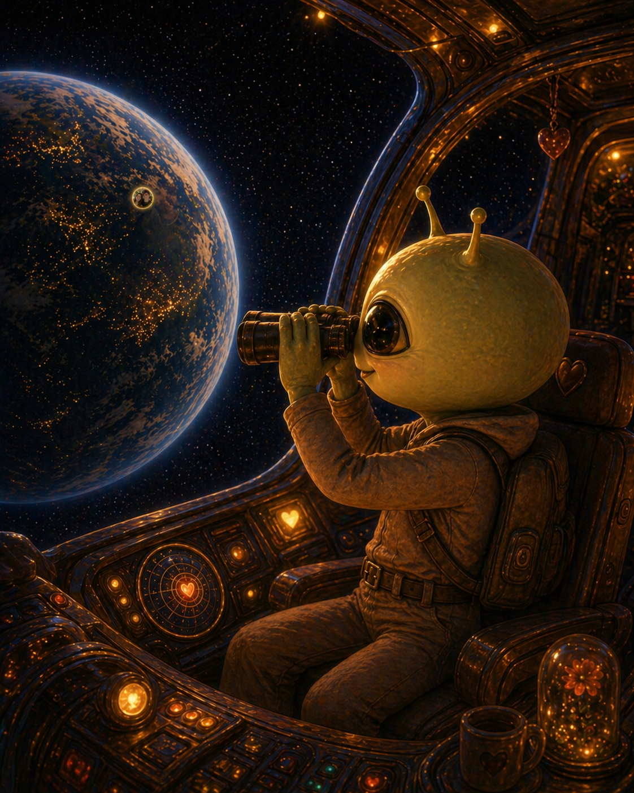
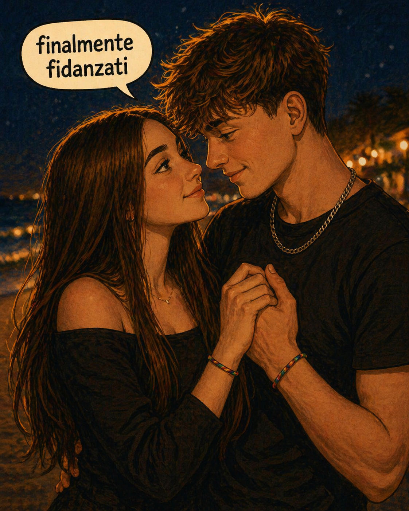
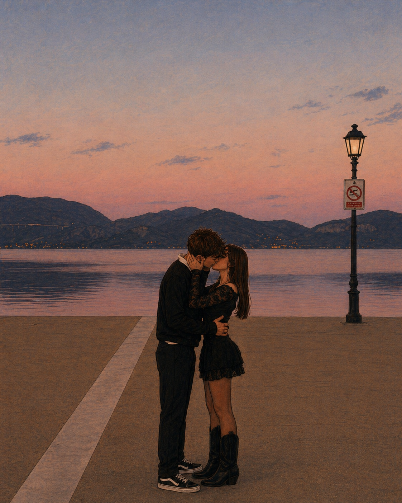
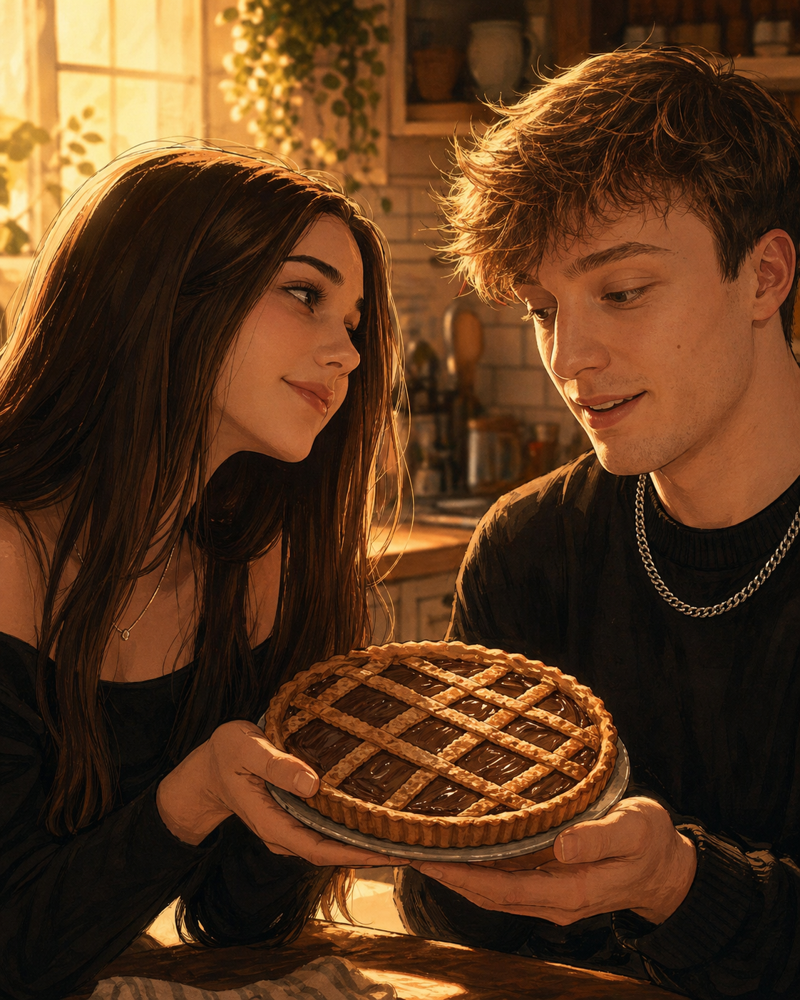

299.792 km
Da qui vedrebbe la Terra com’era 1 secondo fa.
Un alieno si avvicina alla Terra. Guardando da lontano non vede il presente: vede la luce che gli arriva. E dentro quella luce ha visto noi, momento dopo momento.

La luce viaggia a una velocità finita: circa 299.792 km al secondo. Quindi, più l’alieno è lontano dalla Terra, più vede il nostro passato.
Da qui vedrebbe la Terra com’era 1 secondo fa.
Da qui gli arriverebbe la luce partita dalla Terra 1 giorno prima.
Se si trovasse a questa distanza, oggi vedrebbe la Terra di 8 mesi fa: il tempo in cui tutto è diventato nostro.
Se si avvicina molto velocemente, i momenti gli arrivano più compressi: la nostra storia gli scorre davanti più in fretta.
Ha visto quello che forse noi vivevamo senza rendercene conto. Piccoli momenti, ma abbastanza luminosi da arrivare fin lassù.



Buon ottavo mese, amore. ✨